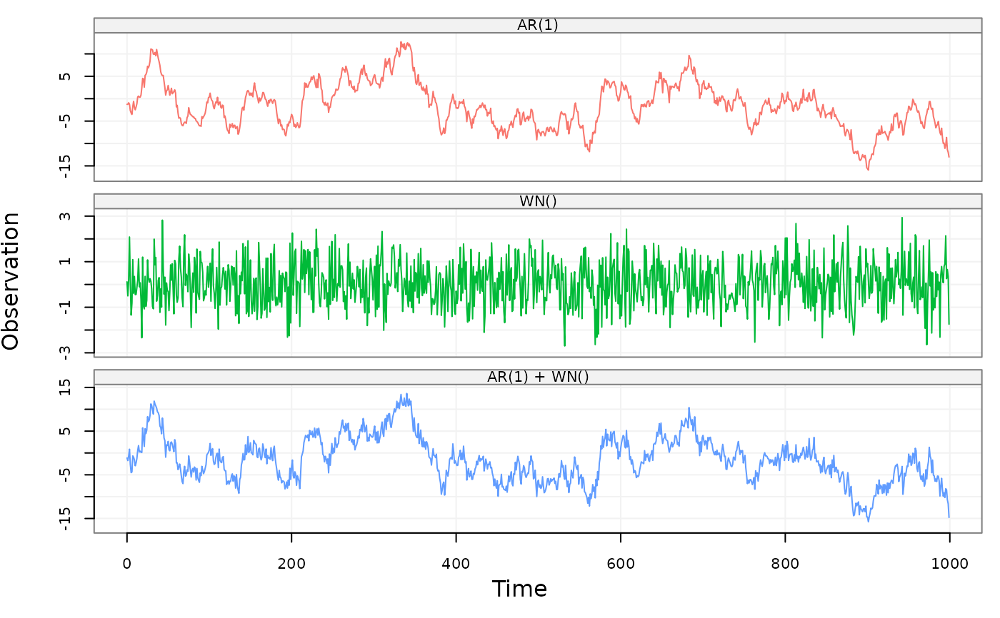

Simulate a lts object based on a supplied time series model.
gen_lts(n, model, start = 0, end = NULL, freq = 1, unit_ts = NULL, unit_time = NULL, name_ts = NULL, name_time = NULL, process = NULL)
| n | An |
|---|---|
| model | A |
| start | A |
| end | A |
| freq | A |
| unit_ts | A |
| unit_time | A |
| name_ts | A |
| name_time | A |
| process | A |
A lts object with the following attributes:
The time of the first observation.
The time of the last observation.
Numeric representation of the sampling frequency/rate.
A string reporting the unit of measurement.
Name of the generated dataset.
A vector that contains model names of decomposed and combined processes
This function accepts either a ts.model object (e.g. AR1(phi = .3, sigma2 =1) + WN(sigma2 = 1)) or a simts object.
# AR set.seed(1336) model = AR1(phi = .99, sigma2 = 1) + WN(sigma2 = 1) test = gen_lts(1000, model) plot(test)